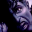
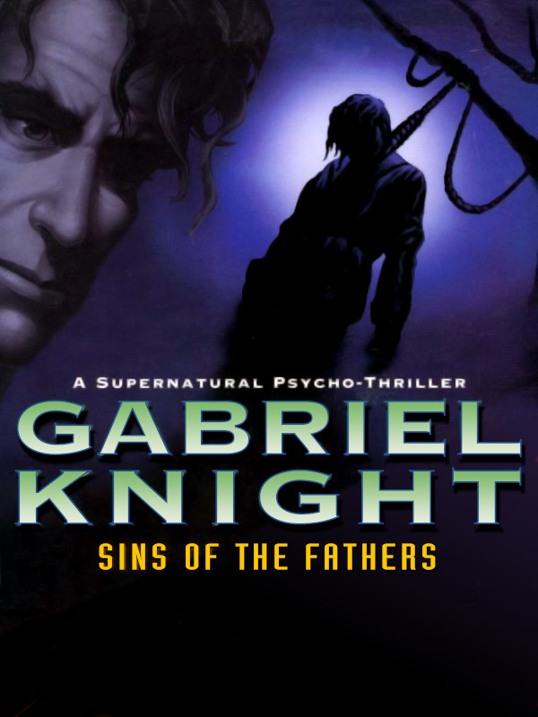

Gabriel Knight |
|
| Tiempo de juego | 8m 22s |
| Última actividad | 10/11/2025 19:04:53 |
| Añadido | 10/11/2025 19:04:47 |
| Modificado | 10/12/2025 11:26:50 |
| Estado de finalización | Jugado |
| Librería | Playnite |
| Fuente | |
| Plataforma | PC (Windows) |
| Fecha de lanzamiento | 17/12/1993 |
| Puntuación de la Comunidad | 87 |
| Puntuación de la Crítica | |
| Puntuación de usuario | |
| Género | Adventure Point-and-click Puzzle |
| Desarrollador | Sierra On-Line |
| Editor | Activision Publishing Sierra On-Line |
| Característica | Single Player |
| Enlaces | Steam GOG |
| Tag | |
Una de las aventuras gráficas más oscuras, maduras y mejor escritas de la historia. Esto es terror gótico en el sur de Estados Unidos.
Sos Gabriel Knight. No sos un héroe. Sos un escritor de cuarta, medio chanta, bastante mujeriego y que apenas se banca la librería de libros raros que tiene en Nueva Orleans. Tu única compañía es tu asistente, Grace Nakimura, que básicamente es más inteligente que vos y hace todo el laburo.
¿La trama? Arranca con una serie de asesinatos brutales en la ciudad. La policía está perdida, pero todos los cuerpos tienen un patrón: VUDÚ. Posta. Y vos, como buen chanta, te metés a investigar para "escribir una novela", pero te terminás metiendo en un quilombo que te supera por mil.
El juego es una obra maestra de Jane Jensen. Es puro misterio, historia y una atmósfera que te la regalo.
Una joya absoluta del "point and click". Si te gustan los misterios oscuros, esto es un viaje de ida.